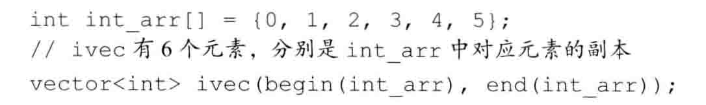
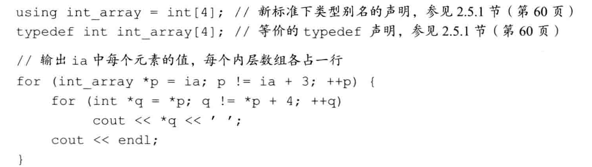

基本内置类型
- 不要混用带符号类型和无符号类型（能不用无符号整数的可以不用）
- 初始化不是赋值，初始化的含义是创建变量时赋予一个初始值，而赋值的含义是把对象的当前值擦除，而以一个新值来替代
声明和定义
- 声明使得名字为程序所知，一个文件如果想要使用到别处定义的名字则必须包含对那个名字的声明，而定义负责创建与名字关联的实体（变量声明规定了变量的类型和名字，而定义还申请存储空间，也可能创建与名字关联的实体
- 变量能且只能够定义一次，而可以被多次声明
复合类型
- 引用:引用并非对象，它只是为一个已经存在的对象所起的另外一个名字。引用的对象必须是一个对象，不能够是一个字面量
- 引用必须被初始化
- 如果想要在多个文件之间共享const对象，必须在变量的定义之前添加extern关键字。
常量引用
|
|
注意：
常量引用仅是对引用可参与的操作做出了限定，对于引用的对象本身是不是一个变量未做限定
指向常量的指针也没有规定其所指的对象必须是一个对象，仅仅要求不能够通过该指针改变对象的值
概念：常量表达式：值不会改变并且在编译过程就能够得到计算结果的表达式
auto：auto一般会忽略顶层const，保留底层const
|
|
|
|
C语句风格的数组:
|
|
这样可以创建一个数组（将数组转换为vector）

使用别名来代替类型

第一行和第二行是等价的